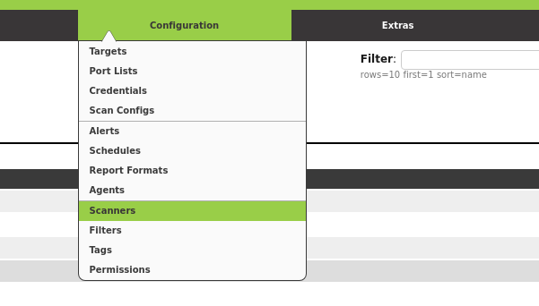
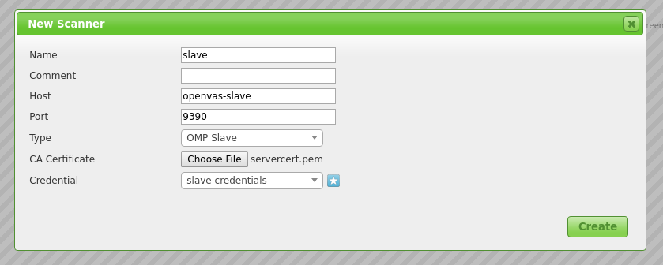
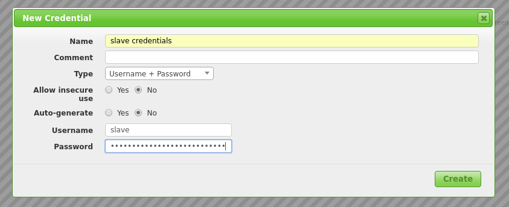
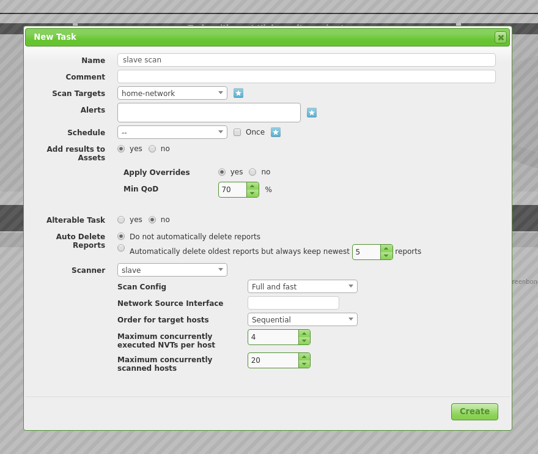

Setup OpenVAS as Master and Slave
Did you ever want to connect your different OpenVAS installations and have all information about the vulnerabilities one one spot? Or do you have very strict network policies and want scan a separate sub-network, but do not want to browse your vulnerability in this sub-network? Well, this is possible by using one OpenVAS installation as a Master and the other ones as OMP Slaves.
Setup OpenVAS Installations
Before diving into the master-slave configuration, here a brief description how I setup my OpenVAS installations.
Since OpenVAS is mostly developed on Debian, I used Debian Jessie as OS for the OpenVAS installations.
I installed OpenVAS 9, which is the latest stable version of OpenVAS at the moment, but I do not install the Greenbone Security Assistant on the Slave. I do not want to connect to the slave via the Web interface, so I do not need it.
After installation, I did the casual things you have to do with a new OpenVAS
installation. I set up the Redis Server using the
configuration from OpenVAS, generated certificates and private keys(
Although I do not need the certificate and private key for Greenbone Security
Assistant on the slave side, I was lazy and used openvas-manage-certs -a as
well on the master as on the slave) and downloaded the
SCAP,
CERT and
NVT data on both Master and
Slave.
Since I do not want to start the daemons on the master and sensors manually, I created some Systemd service files. If you are interested, I stored them here. You are free to use them.
That is my setup. So now let us talk about master-slave configuration.
On the Slave Side
As you probably already noticed, I used different Systemd service files for
the OpenVAS Manager on the Master and on the Slave side. This is because I want
to directly connect to OpenVAS Manager on the slave and therefore it has
to listen globally. This can be achieved by starting the OpenVAS Manager with
listen=0.0.0.0. A netstat call later we also know it listens on Port
9390.
openvas-slave$ netstat -tulpen
Active Internet connections (only servers)
Proto Recv-Q Send-Q Local Address Foreign Address State User Inode PID/Program name
...
tcp 0 0 0.0.0.0:9390 0.0.0.0:* LISTEN 0 11430 401/openvasmd
...
The OpenVAS Manager authenticate itself using a certificate. To later be able
to verify this communication we need to know this certificate. The certificate
the OpenVAS Manager uses can be found under
${CMAKE_INSTALL_PREFIX}"/var/lib/openvas/CA/servercert.pem.
So without changing the CMake variables it can be found under
/usr/local/var/lib/openvas/CA/servercert.pem. Save this file somewhere to
be able to use it on the master side later.
We also need a OpenVAS Manager user to connect to. Therefore we simply create one
openvas-slave$ openvasmd --create-user slave
User created with password '263383eb-3234-4114-b3bb-f6b78e95982d'.
Now we can move on to the master.
On the Master Side
Login to the Greenbone Security Assistant (If you do not have a user to connect to it, now is the time to create one) and go to Configuration -> Scanners.

Create a new Scanner using the star symbol. Now you have to fill in the form. Here is how the filled in form looked in my installation.

- Host: Hostname or IP of your Slave
- Port:
9390, as seen in the previous section - Type:
OMP Slave - CA Certificate: The certificate you gathered from the slave
As Credentials you have to use the user you created on the slave. You can simply use the star symbol again to create it on-the-fly.

After you have created your new Slave Scanner, you can use it to scans.

Tada! A slave scan.